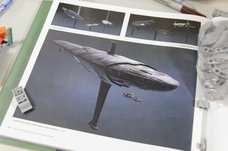
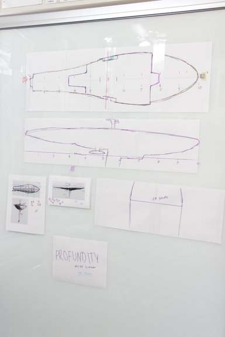
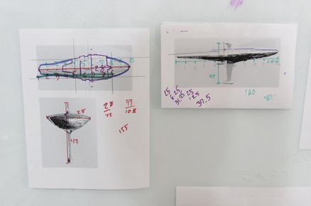

MOC Blueprints
Ever since I’ve been building MOCs, I’ve never been one to do a lot of drawings or sketches for what I want to make.
4/1/18
Ever since I’ve been building MOCs, I’ve never been one to do a lot of drawings or sketches for what I want to make. I come up with a few ideas in a notebook just to make sure I remember them and basically just build and design the MOC as I go. But my last few MOCs haven’t exactly been the same in the sense that I could just look at an image for inspiration, or not even, and just go ahead. Instead, they were replicas of things obviously pre-designed, with existing models and proportions. This means it’s really important to get all the measurements in the correct scale.
Lucky for us, there’s a simple way to have sketches to scale with your final product. I’m currently working on the Rebel flagship from Rogue One and so far these are the images I’m working with, all depicted the actual, real size of what the eventual ship is going to be.
 It surely wasn’t that difficult, especially for how much I’ve already used it. It makes it really straightforward to line up your work-in-progress build to the drawing rather than guesstimating from a stock image of whatever you’re making.
The first step to actually drawing your blueprints is printing some pictures to scale up. I luckily found a 3D model for my ship, which I rotated around to get a front, side, and top profile.
One I printed them I measured and labeled them. With the measurements, I was able to scale up the size to whatever I wanted. In this case, I simple wanted the ship to be 100 studs long, so it was a pretty easy conversion. I put markers on the printout and on the bigger blueprints all the same places so it was easy to recreate the same lines and angles, and that was about it.
From there I had about everything I needed for the building process to commence and get off to the races with the MC75 cruiser. I hope I was able to help anyone out who could have used any such tips on scaling their MOC so it looks as accurate of a replica as it can. If this did provide any good suggestions (or maybe not for that matter) leave a comment down below. Anyway, wish me luck on the rest of this ship. I’ll also be making videos on it by the way